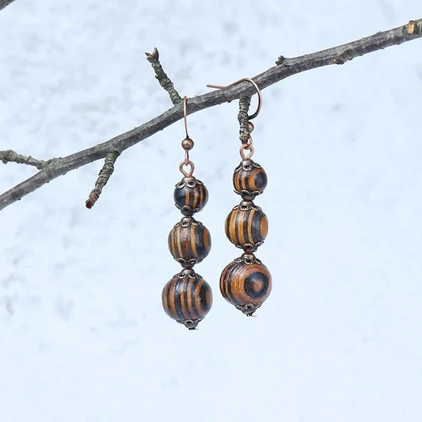
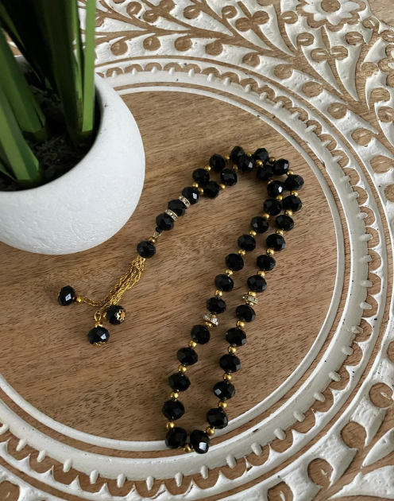
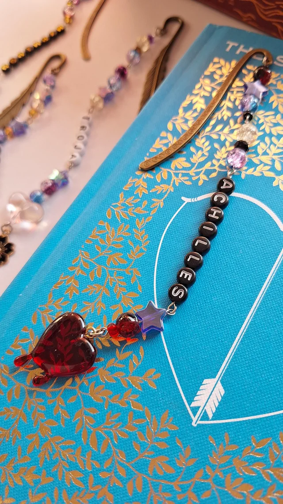
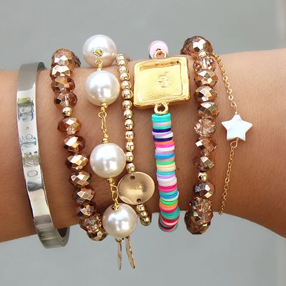

Beaded earrings
Custom colours and lengths, made to suit any outfit or occasion.
Beads & All began as a personal hobby, handcrafting beaded jewellery as gifts for friends and family. What started as a small creative outlet soon grew through word of mouth into a home-based business dedicated to producing custom, handmade beaded accessories.
Every piece is designed and strung by hand, meaning no two items are ever quite the same. Our mission is to provide personalised, high-quality accessories that mass-produced retailers simply cannot offer.
Beads & All specialises in the following handmade items, all available as custom orders:

Custom colours and lengths, made to suit any outfit or occasion.

Handcrafted prayer beads made with care, using durable, quality materials.

A unique, functional gift idea — beaded bookmarkers in your choice of colours.

Stackable, colourful beaded bangles, sized to fit.